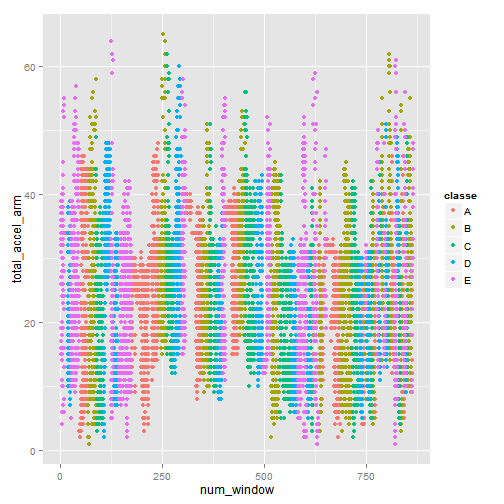

This is an R Markdown document. Markdown is a simple formatting syntax for authoring HTML, PDF, and MS Word documents. For more details on using R Markdown see http://rmarkdown.rstudio.com.
1) Firstly, I loaded the packages and the training data. I divided the data (given training set only) into two sets: Training set (60%) and testing set (40%)
library(ggplot2); library(caret);
Data = read.csv("pml-training.csv", header = TRUE, sep = "," );
#summary(Data)
inTrain <- createDataPartition(y=Data$classe,
p=0.6, list=FALSE)
training <- Data[inTrain,]
testing <- Data[-inTrain,]
dim(training); dim(testing)
## [1] 11776 160
## [1] 7846 160
2) Secondly, I took a look at the data using summary command (and also in a spreadsheet application) and I realized that there is a lot of missing values or NAN values. It was specific for entire columns, therefore I decided to select only columns which seemed usable. I selected the predictors using following code:
keeps <- c(
"num_window", "roll_belt", "pitch_belt", "yaw_belt", "total_accel_belt",
"gyros_belt_x", "gyros_belt_y", "gyros_belt_z", "accel_belt_x", "accel_belt_y",
"accel_belt_z", "magnet_belt_x", "magnet_belt_y", "magnet_belt_z", "roll_arm",
"pitch_arm", "yaw_arm", "total_accel_arm", "gyros_arm_x", "gyros_arm_y", "gyros_arm_z",
"accel_arm_x", "accel_arm_y", "accel_arm_z", "magnet_arm_x", "magnet_arm_y",
"magnet_arm_z", "roll_dumbbell", "pitch_dumbbell", "yaw_dumbbell", "total_accel_dumbbell",
"gyros_dumbbell_x", "gyros_dumbbell_y", "gyros_dumbbell_z", "accel_dumbbell_x",
"accel_dumbbell_y", "accel_dumbbell_z", "magnet_dumbbell_x", "magnet_dumbbell_y",
"magnet_dumbbell_z", "roll_forearm", "pitch_forearm", "yaw_forearm",
"gyros_forearm_x", "gyros_forearm_y", "gyros_forearm_z", "accel_forearm_x",
"accel_forearm_y", "accel_forearm_z", "magnet_forearm_x", "magnet_forearm_y",
"magnet_forearm_z", "classe"
)
training_selection = training[keeps]
#summary(training_selection)
3) Then I displayed some plot of predictors that seemd to be general and important, such as "total_accel_belt" or "total_accel_arm" and "total_accel_dumbbell". The dependences weren´t strong and it seemed that the model has to be based on a bit advanced algorithm. Therefore I decided to use a non linear and advanced algorithm - Random forests. I am attaching one graph from visualization of the features.

4) Then I fitted the Random forest model using following code. In preprocessing, I set all the NA values to be removed (I had been removing the columns in previous preprocessing. However, it could happen that some NA values rested in the data). In this point I tried also PCA in preprocessing (to reduce computational demands) but it reduced the accuracy a lot. It confirms an assumption that PCA is useful especially for linear models. I left default settings for train controlling (Bootstrapping) as well as the metrics to maximalize (Accuracy, RMSE).
args(trainControl)
## function (method = "boot", number = ifelse(grepl("cv", method),
## 10, 25), repeats = ifelse(grepl("cv", method), 1, number),
## p = 0.75, initialWindow = NULL, horizon = 1, fixedWindow = TRUE,
## verboseIter = FALSE, returnData = TRUE, returnResamp = "final",
## savePredictions = FALSE, classProbs = FALSE, summaryFunction = defaultSummary,
## selectionFunction = "best", preProcOptions = list(thresh = 0.95,
## ICAcomp = 3, k = 5), index = NULL, indexOut = NULL, timingSamps = 0,
## predictionBounds = rep(FALSE, 2), seeds = NA, adaptive = list(min = 5,
## alpha = 0.05, method = "gls", complete = TRUE), allowParallel = TRUE)
## NULL
modelFit <- train(classe ~.,data=training_selection,preProcess.na.remove = TRUE, method="rf")
modelFit
## Random Forest
## 11776 samples
## 52 predictors
## 5 classes: 'A', 'B', 'C', 'D', 'E'
##
## No pre-processing
## Resampling: Bootstrapped (25 reps)
##
## Summary of sample sizes: 11776, 11776, 11776, 11776, 11776, 11776, ...
##
## Resampling results across tuning parameters:
##
## mtry Accuracy Kappa Accuracy SD Kappa SD
## 2 0.99 0.987 0.00147 0.00186
## 27 0.995 0.994 0.0015 0.00189
## 52 0.992 0.989 0.00294 0.00373
##Accuracy was used to select the optimal model using the largest value.
##The final value used for the model was mtry = 27.
modelFit$finalModel
## Call:
## randomForest(x = x, y = y, mtry = param$mtry, preProcess.na.remove = TRUE)
## Type of random forest: classification
## Number of trees: 500
## No. of variables tried at each split: 27
##
## OOB estimate of error rate: 0.29%
## Confusion matrix:
## A B C D E class.error
## A 3346 1 0 0 1 0.0005973716
## B 6 2268 4 1 0 0.0048266784
## C 0 5 2049 0 0 0.0024342746
## D 0 0 9 1920 1 0.0051813472
## E 0 1 0 5 2159 0.0027713626
5) Then I predicted the classes for my testing set (40% of given training set) and I created a confusion matrix. The statistics didn´t vary a lot from the previous ModelFit statistics. It shows that algorithm works well also for an independent data.
predictions <- confusionMatrix(predictions,testing$classe)
## Confusion Matrix and Statistics
##
## Reference
## Prediction A B C D E
## A 2232 11 0 0 0
## B 0 1507 5 0 0
## C 0 0 1363 4 0
## D 0 0 0 1282 2
## E 0 0 0 0 1440
##
## Overall Statistics
##
## Accuracy : 0.9972
## 95% CI : (0.9958, 0.9982)
## No Information Rate : 0.2845
## P-Value [Acc > NIR] : < 2.2e-16
##
## Kappa : 0.9965
## Mcnemar's Test P-Value : NA
##
## Statistics by Class:
##
## Class: A Class: B Class: C Class: D Class: E
## Sensitivity 1.0000 0.9928 0.9963 0.9969 0.9986
## Specificity 0.9980 0.9992 0.9994 0.9997 1.0000
## Pos Pred Value 0.9951 0.9967 0.9971 0.9984 1.0000
## Neg Pred Value 1.0000 0.9983 0.9992 0.9994 0.9997
## Prevalence 0.2845 0.1935 0.1744 0.1639 0.1838
## Detection Rate 0.2845 0.1921 0.1737 0.1634 0.1835
## Detection Prevalence 0.2859 0.1927 0.1742 0.1637 0.1835
## Balanced Accuracy 0.9990 0.9960 0.9979 0.9983 0.9993
6) Finally, I predicted 20 given cases (given test set) using following code:
Data_TS = read.csv("pml-testing.csv", header = TRUE, sep = "," );
#summary(Data_TS)
predictions <- predict(modelFit,newdata=Data_TS)
predictions
## [1] B A B A A E D B A A B C B A E E A B B B
## Levels: A B C D E